
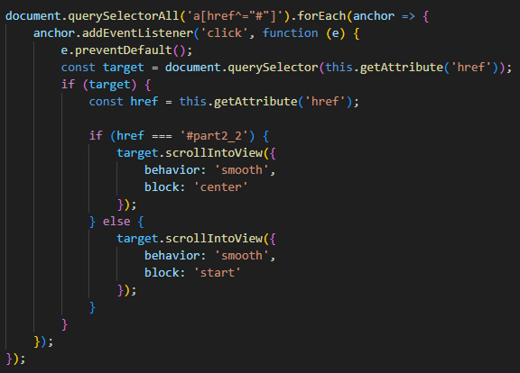
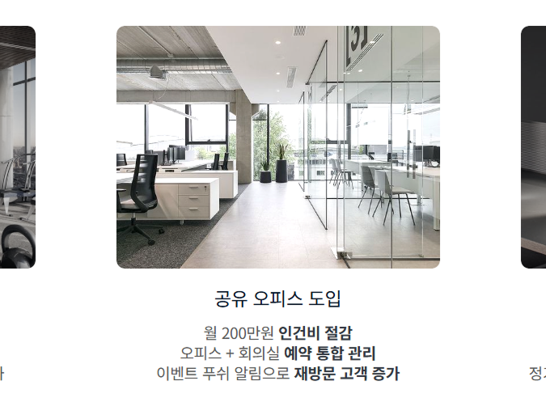
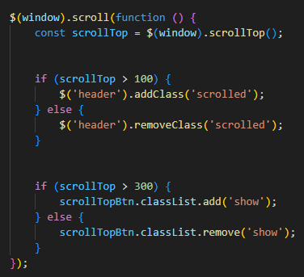

앵커 링크 클릭 시 e.preventDefault()로 기본 점프 동작을 막고, scrollIntoView로 부드러운 섹션 이동 구현
섹션별 block 기준(start/center)을 분기 처리해 요소가 적절한 위치에 정렬되도록 구현
jQuery 스크롤 이벤트로 100px 이상 시 헤더 배경색 변경, 300px 이상 시 상단 이동 버튼 표시
IntersectionObserver로 스크롤 진입 시 슬로건 페이드인 애니메이션 구현
각 섹션에 CSS hover 효과 적용
04
QA
크로스 브라우징 테스트 (Chrome, Safari)
반응형 검증
05
Deploy
GitHub Pages 배포

Style Guide
프로젝트의 일관성을 위한 디자인 시스템
Color Palette
#22356F
Primary - 신뢰감을 주는 메인 블루
#4A90E2
Secondary - 포인트가 되는 스카이 블루
#FAFAFA
Background - 배경색
Typography
Pretendard
본문 텍스트 - 가독성과 현대적인 느낌
Design Decisions
주요 디자인 결정과 그 이유
왜 블루 컬러인가?
무인키오스크는 신뢰성이 중요한 제품입니다. #22356F 네이비 블루로 안정감과 전문성을 전달하고, #4A90E2 스카이 블루로 포인트를 주어 딱딱하지 않은
균형감을 만들었습니다.
랜딩페이지 구조
한 페이지에 제품 소개부터 후기까지 모든 정보를 담아 스크롤만으로 전체 내용을 파악할 수 있도록 설계했습니다. 앵커 링크로 원하는 섹션으로 바로 이동할 수 있어
긴 페이지에서도 탐색이 자연스럽습니다.
고정 헤더 + 상단 이동 버튼
긴 랜딩페이지 특성상 헤더를 상단에 고정하고, 스크롤이 300px 이상 내려가면 상단 이동 버튼이 나타나도록 구현했습니다. 스크롤 100px 이상 시 헤더
배경색이 변경되어 콘텐츠와의 구분도 유지됩니다.
All Sections
앵커 링크 클릭 시 e.preventDefault()로 기본 점프 동작을 막고 scrollIntoView({
behavior: 'smooth' })로 부드럽게 이동하도록 구현했습니다. #part2_2 섹션은 block: 'center', 나머지는 block: 'start'로
분기 처리해 각 요소가 적절한 위치에 정렬됩니다.

Visual
스크롤 시 IntersectionObserver로 진입 시점을 감지해 슬로건이 페이드인되도록 구현했습니다.
Sections
제품 소개, 특장점, 도입 사례 등 각 섹션에 CSS hover 효과를 적용해 방문자의 시선이 머물도록 구성했습니다.

Header & Viewport
긴 랜딩페이지에서 사용자가 언제든 네비게이션에 접근할 수 있도록 헤더를 상단에 고정했습니다. jQuery 스크롤 이벤트로
scrollTop 값을 감지해 100px 이상 시 헤더 배경색 변경, 300px 이상 시 상단 이동 버튼 표시를 하나의 이벤트로 통합 처리했습니다.

Review
서비스 도입을 고민하는 방문자가 공감할 수 있는 실제 후기를 캐릭터와 말풍선 형태로 구성해 시각적으로 읽기 쉽도록
디자인했습니다.